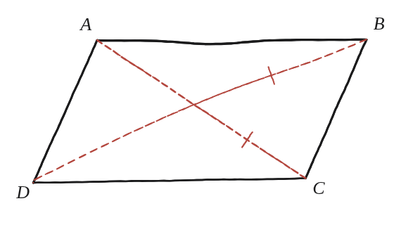

Demostra que un paral·lelogram amb les diagonals iguals ha de ser un rectangle.

Demostra que un paral·lelogram amb les diagonals iguals ha de ser un rectangle.
Una dada extra respecte a q11
Aquí es dona més informació que a la Qüestió 11: no només és un paral·lelogram, sinó que, a més, les seves dues diagonals fan exactament la mateixa llargada. La pregunta és què es pot concloure ara que no es podia concloure abans amb menys informació —i la resposta és el recíproc d'un fet ja conegut en l'altra direcció (que un rectangle té les diagonals iguals): aquí cal demostrar que, a l'inrevés, tenir-les iguals ja obliga a ser un rectangle.
Intuïció: "redreçant" el paral·lelogram
Imaginem un paral·lelogram ben esbiaixat, com el de la figura, i les seves dues diagonals, de longituds diferents. Si s'anés "redreçant" el paral·lelogram —fent-lo cada cop menys inclinat— les dues diagonals s'anirien igualant progressivament, i alhora els seus angles s'anirien acostant a 90°. La igualtat de diagonals no és una propietat aïllada: apunta cap als angles rectes.
Dos triangles, ara amb una dada més
Anomenem els vèrtexs A, B, C, D, en ordre, i considerem el triangle ABC i el triangle ABD, formats per un costat comú (AB) i cadascuna de les dues diagonals. Com que ABCD és un paral·lelogram, els costats AD i BC —costats oposats— ja són iguals entre si. I ara, per la dada nova de l'enunciat, les diagonals AC i BD també són iguals entre si. Amb el costat AB compartit pels dos triangles, els altres dos costats iguals dos a dos, els dos triangles ABC i ABD són congruents pel criteri costat-costat-costat (SSS).

De la congruència als angles rectes
De la congruència dels dos triangles surt que l'angle en A (dins del triangle ABD, és a dir, l'angle DAB del paral·lelogram) i l'angle en B (dins del triangle ABC, és a dir, l'angle ABC) són iguals entre si. Però aquests dos angles, DAB i ABC, són també angles adjacents del paral·lelogram —cauen al mateix costat AB— i els angles adjacents d'un paral·lelogram sempre sumen 180° (ja demostrat a la Qüestió 11, dels angles alterns interns d'una diagonal). Dos angles que són iguals entre si i que, a més, sumen 180° junts, només poden ser de 90° cadascun. Un cop un angle del paral·lelogram és recte, els altres tres també ho són (angles oposats iguals, angles adjacents suplementaris): és un rectangle.
Sí: un paral·lelogram amb les dues diagonals iguals ha de ser un rectangle. La igualtat de diagonals, combinada amb els costats oposats ja iguals per definició, fa que dos triangles formats per una diagonal siguin congruents (SSS); d'aquí surt que dos angles adjacents del paral·lelogram són alhora iguals entre si i suplementaris, cosa que només és possible si cadascun fa 90°.
Comprovació
Paral·lelogram de costats 5 i 12: si les diagonals fan totes dues 13, ha de sortir un rectangle — i, de fet, 5-12-13 és el triangle rectangle conegut, no per casualitat: cada meitat del rectangle (tallat per una diagonal) és exactament aquest triangle.